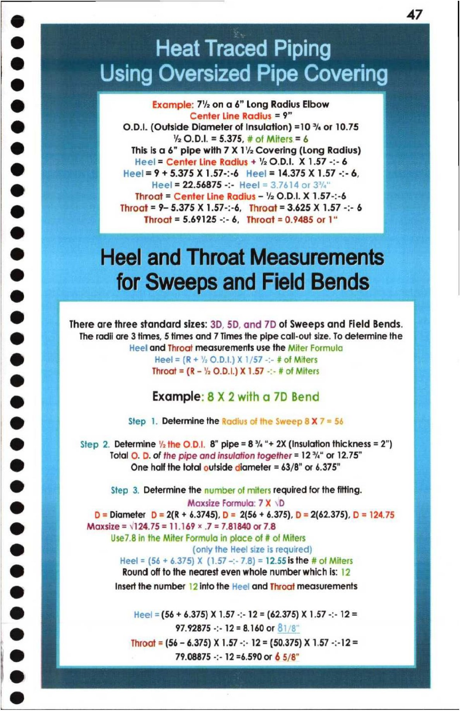

47. Heat Traced Piping & Sweeps & Field Bends

7 47
: Heat Traced Piping
. Using Oversized Pipe Covering
& i Example: 7'2 on a 6” Long Radius Elbow
Center Line Radius = 9”
[o) O.D.I. (Outside Diameter of Insulation) =10 *% or 10.75
Y2 O.D.I. = 5.375, # of Miters = 6
(2) This is a 6” pipe with 7 X 1/2 Covering (Long Radius)
Heel = Center Line Radius + ¥2O.D.I. X 1.57 -:-6
@ f Heel = 9 + 5.375 X 1.57-:-6 Heel = 14.375 X 1.57 -:- 6,
@ en es | Heel = 22.56875 -:- Heel 1614 or 3 i
le: aes a Throat = Center Line Radius - 2 O.D.I. X 1,57-:-6 ae uke
re) ety: Throat = 9- 5.375 X 1.57-:-6, Throat = 3.625 X 1.57 -:- 6 SOE =
5 Throat = 5.69125 -:- 6, Throat = 0.9485 or 1" hits
« There are three standard sizes: 3D, 5D, and 7D of Sweeps and Field Bends.
i) The radii are 3 times, 5 times and 7 Times the pipe call-out size. To determine the
Heel and Throat measurements use the Miter Formula
© Heel = (R + 2 O.D.1.) X 1/57 -:- # of Miters
e Throat = (R - 2 O.D.|.) X 1.57 -:- # of Miters
& Example: 8 X 2 with a 7D Bend
@ Step 1. Determine the Radius of the Sweep 8X 7 = 56
@ Step 2. Determine 2 the O.D.|. 8” pipe = 8 % “+ 2X (Insulation thickness = 2”)
Total O. D. of the pipe and insulation together = 12%" or 12.75"
@ One half the total outside diameter = 63/8” or 6.375"
@ Step 3. Determine the number of miters required for the fitting. ae
@ Maxsize Formula: 7 X \D ie
Pa D = Diameter D = 2(R + 6.3745), D = 2(56 + 6.375), D = 2(62.375),D= 124.75 |
@ Maxsize = \124.75 = 11.169 * .7 = 7.81840 or 7.8
Use7.8 in the Miter Formula in place of # of Miters
oO (only the Heel size is required)
Heel = (56 + 6.375) X (1.57 -:- 7.8) = 12.55is the # of Miters
GS Round off to the nearest even whole number which is: 12
e Insert the number |2 into the Hee! and Throat measurements
@ Heel = (56 + 6.375) X 1.57 -:- 12 = (62.375) X 1.57 -:- 12=
@ 97.92875 -:- 12 = 8.160 or &
Throat = (56 - 6.375) X 1.57 -:- 12 = (50.375) X 1.57 -:-12=
& 79.08875 -:- 12 =6.590 or 6 5/8”
©